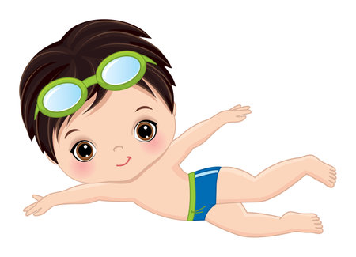
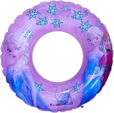
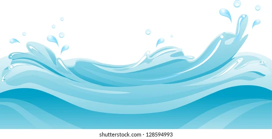

CSS Positions
Here images
  
1. Static position: kono style kora jay na,,emn flow wise e tahke
2. Relative position: current positioner relative kototuku change hbe
3. Absolute position: current positioner relative kototuku change hbe
4. Fixed position: web pager ekta specific jaygay atke thakbe
ami fixed aci, amake fixed thakte dao
4. Sticky position: jekhanei thaakuk na kno,,scroll korle niche jabe na
** Z-index